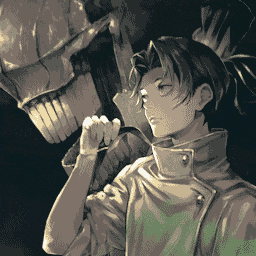

to testando algumas imagens da pasta
todas as imagens abaixo estão sendo colocadas sem tratamento e nem estao sendo nomeadas apropriadamente, o que não é uma boa ideia, mas é apenas um teste
essa é a primeira imagem, localizada na mesma pasta do index
é uma imagem aleatoria que achei no google de jjk sem redimensionamento ou tratamento

essa é a segunda imagem, localizada numa subpasta dentro da pasta do projeto
é outra imagem aleatoria que achei no google de jjk sem redimensionamento ou tratamento
essa é a terceira imagem, localizada num servidor da web, sem salvamento local, e obviamente sem redimensionamento ou tratamento

aqui eu vou testar o que acontece caso eu coloque duas imagens pequenas seguidas
